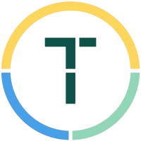

Start Studio WorkshopMaking AI Smarter Before It Talks
JD Fiscus | TechTown Start Studio | February 2026
How to talk to AI
Prompting methods, structure, techniques
How to make AI smarter before it talks
Context engineering, tools, automation
"Prompting is what you say. Context engineering is everything AI sees."
A client emails asking to reschedule a meeting. To reply well, you need:
| # | Context Needed | Why It Matters |
|---|---|---|
| 1 | Original meeting details | What was it about? |
| 2 | Your calendar | When are you free? |
| 3 | Their priority level | VIP client or cold lead? |
| 4 | Relationship history | 3rd email or 3-year partner? |
| 5 | Your current workload | Slammed or open? |
Without any of them, your reply is worse. AI works the same way.
"You wouldn't ask a new hire to reply to that email on their first day. Stop doing that to AI."
"Most people only give AI static context. The magic happens when you add dynamic and tool context."
"Context engineering is doing these 4 things deliberately instead of accidentally."
Context hydration = deliberately filling the context window with the right information before AI acts.
Imagine reading a 500-page manual to fix a leaky faucet vs. reading the 2-page section on faucets.
Relevant context improves accuracy | Optimal peak | Noise hurts accuracy
"The goal isn't maximum context. It's optimal context."
You're on a 2-hour phone call. By minute 90, you've forgotten what was said in minute 10. AI has the same problem.
"Every bad prompt, every retry stays in context and pollutes future responses." Now you understand the mechanics.
| Fix | Operation | What To Do |
|---|---|---|
| Start fresh conversations for new tasks | Isolate | Don't keep one giant chat forever |
| Summarize and carry forward key decisions | Compress | Distill, don't dump |
| Store context externally so you can re-inject | Write + Select | Build a second brain |
| Use tools that auto-refresh context | Dynamic | MCP, N8N |
"If your AI is getting dumber the longer you talk, it's not broken. It's rotting. And now you know how to fix it."
Each tool solves a specific context problem from Block 1
Imagine you could upload every book you've ever read and ask questions across all of them at once.
Upload your pitch deck, market research, competitor analysis, and 20 customer interviews. Ask: "What's my biggest blind spot?"
It connects dots across all of them.
NotebookLM is a Select engine. It takes massive static context and lets you pull out exactly what you need. It prevents context rot because it retrieves fresh from source docs every time.
Your notes are scattered Post-its. A vector brain is a filing cabinet that also understands what the notes MEAN and how they connect.
In meaning-space:
"king" is near "queen"
and far from "bicycle"
Obsidian graph view — visual connections between your notes. Links, tags, and ideas form a knowledge web.
GitHub gist/repo as persistent memory. AI reads your notes across sessions and tools. Your second brain never rots.
This is the Write operation at scale. A permanent context store outside any single conversation.
Remember when every phone had a different charger? USB-C fixed that. MCP is USB-C for AI — one standard plug that connects AI to any tool.
ChatGPT, Claude, Gemini, Cursor, VS Code. Donated to Linux Foundation — THE standard, not a fad.
"Instead of copy-pasting data INTO AI, MCP lets AI reach OUT and grab it."
MCP solves dynamic context — live, changing data that static docs can't capture. Your AI goes from "answering with what it knows" to "answering with what it can look up."
Kitchen table: A virtual assistant who watches for triggers. "When X happens, gather Y, do Z."
N8N is the hydration engine. It auto-assembles context from multiple sources. Instead of you copy-pasting 5 things, N8N does it every time.
Instead of describing what you want a room to look like in 500 words, you show a photo and say "like this, but blue."
Design compresses your intent into a visual artifact. That visual becomes high-signal context for the build phase. You isolate "what should it look like" from "how do I build it."
From framework to practice
"Every single thing here was written with AI.
The difference isn't the prompts —
it's the context I engineered around them."
| Mistake | Why It Happens | Fix |
|---|---|---|
| Pasting everything into one chat | Think more = better | Attention budget — select, don't dump |
| Never starting fresh conversations | Don't want to "lose" context | Isolate — context rots, re-inject what matters |
| Not saving important decisions | Living in the chat | Write — external storage (Obsidian, docs) |
| Manually copy-pasting data | Don't know about MCP/N8N | Connect tools — automate hydration |
| Same chat for every project | Convenience | Isolate — separate context per project |
What questions do you have?
JD Fiscus
TechTown Start Studio
"Don't pray. Plan the context."
Quick reference card • QR codes to each tool • Link to slides